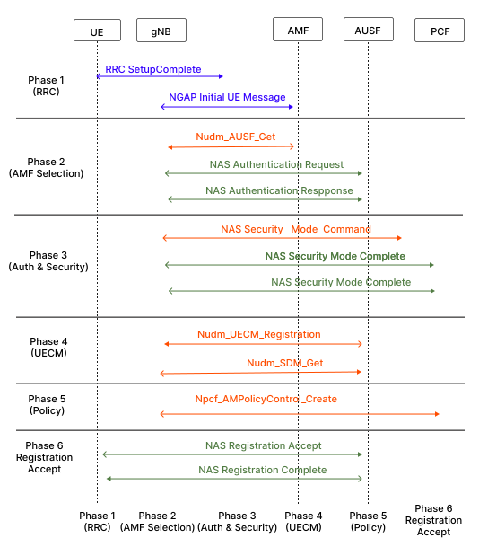
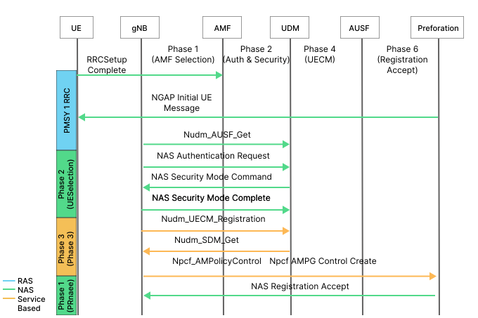
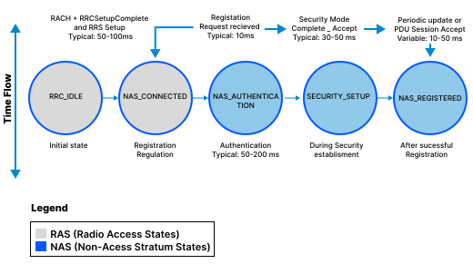
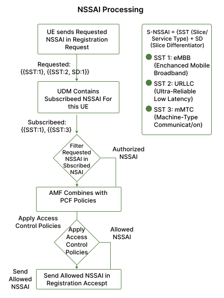
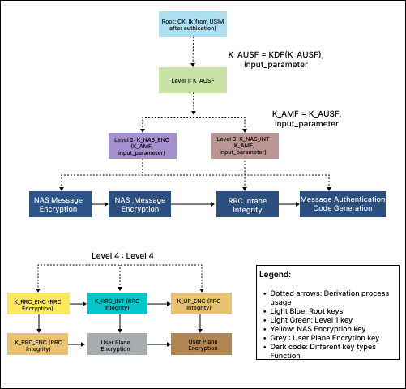
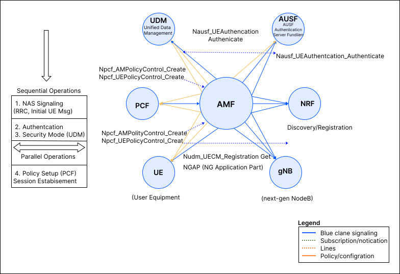

Implement Registration of UE’s with the Core Network
1. Introduction
The User Equipment (UE) registration procedure is one of the most fundamental processes in 5G Standalone (5G SA) networks. This document provides a detailed theoretical analysis of how a UE (such as a smartphone or IoT device) registers with the Access and Mobility Management Function (AMF) in a 5G Core Network. Understanding this process is critical for comprehending 5G network architecture, security mechanisms, and service delivery.
2. Fundamentals
2.1 5G Network Architecture
The 5G Core Network (5GC) uses a service-oriented architecture (SOA) with multiple Network Functions (NFs) communicating via standardized APIs. The key entities involved in UE registration are:
- UE (User Equipment): The end-user device initiating the registration request
- gNB (Next Generation NodeB): The 5G radio access network base station responsible for radio resource management
- AMF (Access and Mobility Management Function): Core network entity managing mobility, access control, and NAS signaling
- UDM (Unified Data Management): Stores subscription information and authentication credentials
- AUSF (Authentication Server Function): Handles authentication vectors and security procedures
- PCF (Policy Control Function): Manages access and mobility policies
- EIR (Equipment Identity Register): Validates device identity and checks for blacklisted equipment
2.2 Registration Types
The 5G specification (3GPP TS 24.501) defines multiple registration types:
- Initial Registration: First-time attachment of UE to 5G network
- Mobility Registration Update: Registration when UE moves to new AMF coverage area
- Periodic Registration Update: UE registers periodically as per timer-based policy
- Emergency Registration: Registration for emergency services access
This document focuses on Initial Registration as the primary use case.
2.3 NAS vs RAS Signaling
- RAS (Radio Access Stratum): Signaling between UE and gNB (RRC protocol)
- NAS (Non-Access Stratum): Signaling between UE and AMF, encapsulated inside RAS messages
- Registration requests and responses use NAS protocol messages defined in TS 24.501
3. UE Registration Process: Detailed Flow
The complete message flow during the UE registration process is illustrated in Figure 1, starting from the initial RRC connection establishment between the UE and the gNB, followed by the NAS signaling exchanges with the AMF for authentication, security mode setup, and finally the registration completion.

Figure 1: UE Registration Overall Message Sequence
3.1 Phase 1: RRC Connection Establishment
3.1.1 Initial Access
The registration process begins when the UE performs initial cell search and synchronization with the gNB:
- UE scans for 5G signals (NRSS - NR Synchronization Signals)
- UE detects and locks onto the gNB's reference signal
- UE obtains system information blocks (SIBs) containing RACH configuration
3.1.2 RACH Procedure (Random Access Channel)
The UE initiates Random Access Channel (RACH) procedure:
- Preamble Transmission: UE sends preamble to gNB to request connection
- RA Response: gNB assigns uplink resources for UE to send RRC Setup Request
- RRC Setup: UE sends RRC Setup Request message including registration cause ("MO Signaling" or "MO Data")
3.1.3 RRC Setup Complete
- gNB allocates RAN UE NGAP ID (unique identifier for this UE session)
- UE sends RRCSetupComplete message containing the NAS Registration Request message
- This marks the end of RAS establishment and beginning of NAS signaling
3.2 Phase 2: AMF Selection and Initial Context Setup
3.2.1 gNB Selects AMF
The gNB performs AMF selection based on:
- Supported network slices (NSSAI - Network Slice Selection Assistance Information) requested by UE
- AMF capabilities advertised during gNB-AMF N2 connection setup
- Load balancing policies and availability
- Last known AMF (if UE has previous registration)
3.2.2 Initial UE Message (gNB → AMF)
The gNB sends NGAP Initial UE Message containing:
- RAN UE NGAP ID: Unique identifier allocated by gNB
- NAS PDU: The Registration Request message from UE
- User Location Information: UE's location (TA - Tracking Area, cell ID)
- RRC Establishment Cause: Indicates why connection was established
- UE Context Request: Optionally requests retrieval from old AMF (in mobility scenarios)
3.2.3 Registration Request Message (UE → AMF)
The NAS Registration Request includes:
- SUCI (Subscription Concealed User Identity) or 5G-GUTI (Globally Unique Temporary Identity): User identity (SUCI preferred for privacy)
- Registration Type: Initial, Mobility, or Periodic
- Last Visited TAI (Tracking Area Identity): Previous tracking area (if applicable)
- Requested NSSAI: Network slices the UE wants to access
- PDU Session Status: Active PDU sessions if any
- UE Security Capabilities: Supported security algorithms and protocols
- Device Properties: IMEISV (device identity)
3.3 Phase 3: Authentication and Security Setup
3.3.1 Identity Request (if SUCI not provided)
If AMF cannot identify the UE from provided identity:
- AMF sends NAS Identity Request requesting SUCI
- UE responds with NAS Identity Response containing SUCI
- This step is conditional based on UE identity provision
3.3.2 AUSF Interaction and Authentication
Step 1: UDM Authentication Information Request
- AMF requests authentication vectors from UDM via AUSF
- Authentication vector contains: RAND (random challenge), AUTN (authentication token), XRES* (expected response)
Step 2: NAS Authentication Request (AMF → UE)
- AMF sends NAS Authentication Request containing:
- RAND (128-bit random number)
- AUTN (128-bit authentication token for network authentication to UE)
- UE verifies AUTN to authenticate the network (mutual authentication)
- UE computes authentication response: RES* = f4(RAND, Security Key K)
Step 3: NAS Authentication Response (UE → AMF)
- UE sends NAS Authentication Response containing RES*
- AMF verifies RES* against XRES*
- If verification successful, UE is authenticated
- If verification fails, authentication is rejected and UE is rejected
3.3.3 Security Mode Setup
The mutual authentication between the UE and the network, alongside the secure negotiation of cryptographic algorithms to protect subsequent signaling and data, is detailed in Figure 2.

Figure 2: Authentication and Security Mode Setup Detail
After successful authentication, security is established as follows:
Step 1: NAS Security Mode Command (AMF → UE)
- AMF sends NAS Security Mode Command selecting security algorithms:
- NAS encryption algorithm (e.g., 128-EEA2, 128-EEA3)
- NAS integrity protection algorithm (e.g., 128-EIA2, 128-EIA3)
- RRC ciphering and integrity protection algorithms (for radio link)
- UE security capabilities are compared with network capabilities to ensure compatibility
Step 2: NAS Security Mode Complete (UE → AMF)
- UE responds with NAS Security Mode Complete message
- Message is now protected with selected algorithms
- All subsequent NAS messages are encrypted and integrity protected
Step 3: EIR Check (Optional)
- AMF sends IMEISV (device serial number) to EIR for device validation
- EIR checks if device is blacklisted or whitelisted
- Result returned to AMF
3.4 Phase 4: UECM Registration and Subscription Data Retrieval
3.4.1 UE Context Management (UECM) Registration
AMF registers with UDM using Nudm_UECM_Registration:
- AMF sends registration message indicating it is the serving AMF for this UE
- UDM stores the AMF identity associated with this access type (3GPP, non-3GPP, etc.)
- UDM subscribes to deregistration events from this AMF
- This step ensures that only one AMF is serving the UE at any given time for a specific access type
3.4.2 Subscription Data Management (SDM) - GET
AMF retrieves UE subscription data:
- Nudm_SDM_Get operation retrieves:
- NSSAI (Network Slice Selection Assistance Information) authorized for this UE
- Access and Roaming Restriction Rules
- Slice-specific subscription parameters
- User Consent and Privacy settings
- Operator Policies
3.4.3 Subscription Data Management (SDM) - Subscribe
AMF subscribes to SDM events:
- AMF subscribes using Nudm_SDM_Subscribe to be notified of:
- Changes in UE's subscription data
- Changes in network slice subscriptions
- Updates to policies affecting the UE
- UDM will notify AMF whenever these parameters change
3.5 Phase 5: Policy Control and Access Management
3.5.1 AM Policy Association (AMF-PCF Interaction)
AMF establishes policy association with PCF:
- AMF uses Npcf_AMPolicyControl_Create to create policy association
- PCF provides:
- Access control policies (which slices/services allowed)
- Mobility policies (handover thresholds, RAI - Registration Area Information)
- QoS policies
- Charging policies
3.5.2 Allowed NSSAI Determination
- Combined from UE-Requested NSSAI and subscribed NSSAI, AMF determines Allowed NSSAI
- Only slices that are both requested AND subscribed are included
- This filtered set is sent to UE in Registration Accept message
3.6 Phase 6: Registration Accept and Completion
3.6.1 NAS Registration Accept (AMF → UE)
AMF sends NAS Registration Accept message containing:
- 5G-GUTI (5G Globally Unique Temporary Identity): Temporary identity assigned by AMF for future use
- Allowed NSSAI: List of network slices UE is authorized to use
- TAI List (Tracking Area Identity List): List of TAs where UE is registered (registration area)
- GPRS Timer 3: Periodic registration update timer value
- SMS over NAS Support: Indicator if SMS over NAS is supported
- Access Type: 3GPP or non-3GPP access
3.6.2 RRC Reconfiguration
- gNB receives the updated parameters and sends RRCReconfiguration to UE
- UE acknowledges with RRCReconfigurationComplete
3.6.3 NAS Registration Complete (UE → AMF)
- UE sends NAS Registration Complete message to acknowledge successful registration
- UE stores received 5G-GUTI for future use
- UE stores TAI List and registration area information
- This marks the successful completion of initial registration
3.7 Phase 7: Post-Registration - UE Policy Association (Optional)
3.7.1 UE Policy Association
After successful registration, AMF can establish UE policy association:
- AMF uses Npcf_UEPolicyControl_Create with PCF
- PCF provides UE policies (device management, service enablement)
- These policies are sent to UE via UE Configuration Update message
3.7.2 UE Ready for Data Services
After registration completion:
- UE can establish PDU sessions to access data services
- UE can send and receive SMS over NAS
- Mobility procedures (handovers, Tracking Area Updates) are now available
- UE is ready for full 5G service consumption
4. Key Concepts and Technical Details
4.1 SUCI Encryption and Protection
The SUCI (Subscription Concealed User Identity) protects user privacy:
- UE's permanent identity (IMSI) is concealed using public key encryption
- Public key of the network obtained from public key distribution center
- SUCI format: NAI (Network Access Identifier) encrypted with operator's public key
- AUSF can decrypt SUCI to obtain SUPI (Subscription Permanent User Identity)
4.2 Temporary Identity Handling
- 5G-GUTI: Temporary identity allocated by AMF for future registrations
- UE uses 5G-GUTI in subsequent registration attempts instead of SUCI
- Provides privacy improvement by rotating UE identity periodically
- Old 5G-GUTI remains valid until new one is accepted by UE
Throughout the registration lifecycle, a UE transitions between various states (such as deregistered, registered, and idle modes) based on network events and connectivity status. These state transitions are depicted in Figure 3.

Figure 3: UE Registration State Transitions
4.3 Registration Area (TA List)
- AMF assigns a Tracking Area Identity (TAI) List (also called RA - Registration Area)
- UE can move within this area without sending registration update messages
- When UE moves outside TA List, it must perform Mobility Registration Update
- Reduces signaling overhead and improves mobility efficiency
4.4 Network Slicing in Registration
Network slicing allows the UE to connect to specialized network instances. As outlined in Figure 4, the UE's requested NSSAI is evaluated against its subscribed slices and network policies to determine the allowed NSSAI for optimized service delivery. The key aspects of this process include:
- UE can request specific network slices via Requested NSSAI (1 to 8 slices)
- Each NSSAI contains: S-NSSAI (Single-NSSAI) = {SST (Slice/Service Type) + SD (Slice Differentiator)}
- AMF filters requested NSSAI against subscribed NSSAI to determine Allowed NSSAI
- Different slices may have different:
- QoS characteristics
- Allowed services
- PDU session types (IPv4, IPv6, Ethernet)
- Charging models

Figure 4: Network Slice Selection (NSSAI) Processing Flow
4.5 Security Context Derivation
After authentication, the UE and the network establish a hierarchical structure of cryptographic keys to protect signaling and data. As illustrated in Figure 5, the primary authentication keys are used to derive specific keys for NAS and RRC signaling encryption and integrity protection:
- NAS key (K_NAS): Derived from shared secret using key derivation function
- RRC keys (K_RRC enc, K_RRC int): Derived from K_NAS for radio link protection
- K_NAS = KDF(Authentication Key, Server Function Name)
- Separate keys for encryption and integrity protection ensure security separation

Figure 5: Security Context and Key Derivation Tree
4.6 Ciphering and Integrity Protection
- NAS Ciphering: All NAS signaling messages encrypted after security mode setup
- NAS Integrity: All NAS messages receive message authentication code (MAC) for integrity
- RRC Ciphering: RRC messages on radio link encrypted
- RRC Integrity: RRC messages integrity protected
- Together ensure confidentiality and authenticity of signaling
5. Message Sequence Summary
Below is the sequence of key messages in UE registration:
| Step | Message | Direction |
|---|---|---|
| 1 | RRCSetupComplete (with Registration Request) | UE → gNB → AMF |
| 2 | Identity Request | AMF → UE |
| 3 | Identity Response | UE → AMF |
| 4 | NAS Authentication Request | AMF → UE |
| 5 | NAS Authentication Response | UE → AMF |
| 6 | NAS Security Mode Command | AMF → UE |
| 7 | NAS Security Mode Complete | UE → AMF |
| 8 | Registration Accept | AMF → UE |
| 9 | RRCReconfiguration (from gNB) | gNB → UE |
| 10 | Registration Complete | UE → AMF |
Table: Key NAS and RRC Messages in UE Registration
6. Network Function Interactions
6.1 AMF-UDM Interaction
The AMF and UDM interact multiple times during registration:
| Operation | API | Purpose |
|---|---|---|
| Authentication Get | Nudm_AUSF_Get | Retrieve authentication vectors |
| UECM Registration | Nudm_UECM_Registration | Register AMF as serving function |
| SDM GET | Nudm_SDM_Get | Retrieve subscription data |
| SDM Subscribe | Nudm_SDM_Subscribe | Subscribe to data changes |
| AM Policy Control | Npcf_AMPolicyControl_Create | Create policy for UE |
Table: AMF Service Consumer Operations
6.2 Authentication via AUSF
AUSF acts as authentication server:
- Communicates with UDM to retrieve authentication credentials
- Generates authentication vectors (RAND, AUTN, XRES*)
- Returns vectors to AMF
- Validates RES* received from UE
6.3 Policy Control via PCF
PCF controls access and mobility:
- Creates policy association when AMF requests
- Provides access control and mobility policies
- Handles QoS policies and charging information
- Notifies AMF of policy changes
The broader service-based interactions of the AMF with other core network functions—such as the UDM, AUSF, and PCF—are illustrated in Figure 6. These interactions utilize standardized APIs to retrieve authentication vectors, manage subscriptions, and apply network policies throughout the registration process.

Figure 6: AMF Network Function Interactions and APIs
7. NGAP Procedure Details
While Section 3 described the end-to-end registration flow, this section focuses specifically on the NGAP (NG Application Protocol) procedures that carry NAS messages between gNB and AMF over the N2/NG-C interface, and that establish the UE's context inside the core network.
7.1 NGAP's Role in Registration
NGAP runs over SCTP (port 38412) between gNB and AMF. It does not interpret NAS content — it transports NAS PDUs transparently while also managing the UE's context, resources, and signaling connection at the gNB.
The key NGAP procedures involved in registration are:
| NGAP Procedure | Direction | Purpose |
|---|---|---|
| Initial UE Message | gNB → AMF | Carries the first NAS message (Registration Request) and establishes UE's NGAP context |
| Downlink NAS Transport | AMF → gNB | Carries subsequent NAS messages (Identity Request, Auth Request, Security Mode Command, etc.) to the UE |
| Uplink NAS Transport | gNB → AMF | Carries UE's NAS responses back to AMF |
| Initial Context Setup Request | AMF → gNB | Instructs gNB to establish UE context, security, and (optionally) PDU session resources |
| Initial Context Setup Response | gNB → AMF | Confirms UE context establishment |
| UE Context Release Command/Complete | AMF ↔ gNB | Releases NGAP/UE context (e.g., after registration failure or reject) |
7.2 Initial UE Message (Detailed)
This is the first NGAP message and creates the UE's context at the AMF side:
NGAP: INITIAL UE MESSAGE
{
RAN UE NGAP ID: 1 -- allocated by gNB
NAS-PDU: <Registration Request> -- opaque NAS container
User Location Information:
{
NR CGI: { PLMN: 00101, Cell ID: 0x0000101 }
TAI: { PLMN: 00101, TAC: 000064 }
}
RRC Establishment Cause: mo-Signalling
UE Context Request: true -- requests AMF to set up UE context
}
At this point, AMF allocates its own AMF UE NGAP ID, and the pair (RAN UE NGAP ID, AMF UE NGAP ID) uniquely identifies the UE's NGAP signaling connection for the remainder of the procedure.
7.3 Downlink / Uplink NAS Transport
Once the initial context exists, all further NAS exchanges (Identity Request/Response, Authentication Request/Response, Security Mode Command/Complete) are wrapped in these lightweight NGAP procedures:
NGAP: DOWNLINK NAS TRANSPORT
{
AMF UE NGAP ID: 10
RAN UE NGAP ID: 1
NAS-PDU: <Authentication Request>
}
NGAP: UPLINK NAS TRANSPORT
{
AMF UE NGAP ID: 10
RAN UE NGAP ID: 1
NAS-PDU: <Authentication Response>
User Location Information: { ... } -- updated location, if changed
}
These two procedures repeat for each NAS round-trip shown in the Section 5 message table (Identity, Authentication, Security Mode).
7.4 Initial Context Setup
After security is established (post Security Mode Complete), AMF sends Initial Context Setup Request to instruct the gNB to finalize the UE's radio and security context:
NGAP: INITIAL CONTEXT SETUP REQUEST
{
AMF UE NGAP ID: 10
RAN UE NGAP ID: 1
Old-to-New Security Context: { K_gNB, NAS algorithms, ... }
UE Aggregate Maximum Bit Rate: { UL: 100 Mbps, DL: 500 Mbps }
Mobility Restriction List: { ... }
NAS-PDU: <Registration Accept> -- often piggybacked here
}
The gNB applies the security context to the RRC connection (deriving AS-level keys from K_gNB), configures radio bearers, and responds:
NGAP: INITIAL CONTEXT SETUP RESPONSE
{
AMF UE NGAP ID: 10
RAN UE NGAP ID: 1
}
This procedure is what transitions the NGAP signaling connection from a "bare" initial context (created by Initial UE Message) into a fully secured, resourced UE context — the NGAP-level counterpart to the NAS Registration Accept/Complete exchange in Section 3.6.
7.5 UE Context Release
If registration fails, is rejected, or the UE later deregisters, the NGAP context is torn down:
NGAP: UE CONTEXT RELEASE COMMAND
{
AMF UE NGAP ID: 10
RAN UE NGAP ID: 1
Cause: { NAS(Normal-Release) | RadioNetwork(...) }
}
gNB releases RRC connection and radio resources, then confirms with UE Context Release Complete.
8. Registration Failure and Rejection Scenarios
Registration does not always succeed. 5G defines specific 5GMM cause codes (3GPP TS 24.501) returned in a NAS Registration Reject message, as well as failure points at the NGAP level.
8.1 Failure Points Across the Registration Flow
| Phase | Possible Failure | Resulting Action |
|---|---|---|
| Identity | UE fails to provide valid SUCI | AMF aborts registration, sends Registration Reject |
| Authentication | RES* ≠ XRES* (authentication failure) | AMF sends Authentication Reject; UE registration fails |
| Authentication | UE fails to verify AUTN (network authentication failure) | UE sends Authentication Failure to AMF; AMF may retry or abort |
| Security Mode | UE/network cannot agree on algorithms | Security Mode Reject sent; registration aborted |
| EIR Check | Device IMEISV blacklisted | AMF sends Registration Reject with equipment-related cause |
| Subscription (UDM) | SUPI not found / subscription barred | AMF sends Registration Reject (illegal UE / not authorized) |
| Slice Selection | Requested NSSAI not subscribed or not supported in TA | Registration Reject, or Registration Accept with reduced Allowed NSSAI |
| Policy (PCF) | AM Policy Association fails | AMF may still complete registration with default policies, or reject depending on operator configuration |
| NGAP | Initial Context Setup fails (radio resource shortage) | NGAP Initial Context Setup Failure; AMF may retry or release UE context |
8.2 NAS Registration Reject — Key Cause Codes
The Registration Reject message carries a 5GMM Cause value indicating why registration failed:
| Cause Value | Cause Name | Typical Meaning |
|---|---|---|
| 3 | Illegal UE | UE identity/authentication invalid or fraudulent |
| 5 | PEI not accepted | Device identity rejected by EIR |
| 6 | Illegal ME | Mobile equipment not accepted (blacklisted/non-conforming) |
| 7 | 5GS services not allowed | Subscription does not permit 5GS access |
| 9 | UE identity cannot be derived by the network | SUCI/GUTI could not be resolved |
| 11 | PLMN not allowed | UE not permitted to register on this PLMN |
| 12 | Tracking area not allowed | TA restrictions prevent registration |
| 13 | Roaming not allowed in this tracking area | Roaming agreement/restriction violation |
| 15 | No suitable cells in tracking area | Radio/TA mismatch |
| 22 | Congestion | Network overload; often paired with a back-off timer |
| 27 | N1 mode not allowed | UE/network NAS mode mismatch |
| 62 | No network slices available | Requested NSSAI cannot be satisfied at all |
| 72–95 | (Reserved/protocol errors) | Various protocol error conditions (e.g., message type not compatible) |
8.3 Example Registration Reject Message
NAS: REGISTRATION REJECT
{
5GMM Cause: 11 -- PLMN not allowed
T3346 value: 30 -- back-off timer (minutes), if congestion-related
T3502 value: not present
}
When a back-off timer (e.g., T3346) is included, the UE must not re-attempt registration on that PLMN/access type until the timer expires — mirroring the back-off behavior described for PDU sessions in the Session Management document (Section 8).
8.4 Authentication Failure Handling
If the UE detects a network authentication failure (invalid AUTN, e.g., SQN out of range):
NAS: AUTHENTICATION FAILURE
{
5GMM Cause: 21 -- Synch failure
AUTS: <resynchronization token>
}
The AMF forwards AUTS to AUSF/UDM to resynchronize the sequence number, and the authentication procedure is retried once. Repeated failures result in registration abandonment and a Registration Reject.
8.5 NGAP-Level Failures
Separate from NAS-level rejects, NGAP itself can fail the procedure before Registration Reject is even sent at the NAS layer:
- Initial Context Setup Failure: gNB cannot allocate radio resources (congestion, unsupported UE capability) — AMF may retry, redirect, or abandon.
- NG Setup not completed: If gNB–AMF NG Setup (see the companion NG Setup/N3 document) has not completed, no Initial UE Message can be sent at all, and the UE registration cannot proceed past cell selection.
- SCTP association loss mid-procedure: Causes AMF to release the partial UE context and requires the UE to restart from RRC Setup.
8.6 UE-Side Retry Behavior
- UE stores the 5GMM cause and any back-off timer per PLMN.
- Certain causes (e.g., "Illegal UE," "PLMN not allowed") may cause the UE to mark the PLMN/USIM combination as forbidden until manual intervention or SIM/PLMN change.
- Congestion-related causes (with T3346) allow automatic retry after the timer expires.
- Synch-failure cases trigger an automatic, immediate one-time retry using AUTS before falling back to a hard reject.
9. Conclusion
The UE registration process in 5G networks is a comprehensive multi-phase procedure that establishes secure connectivity, authenticates users, retrieves subscription information, and applies network policies. This document has detailed:
- The complete flow from RRC setup through NAS registration completion
- Security mechanisms including authentication, encryption, and integrity protection
- Network function interactions demonstrating distributed processing
- Policy control and network slicing considerations
- The underlying NGAP procedures (Initial UE Message, NAS Transport, Initial Context Setup, Context Release) that carry and support NAS signaling
- Failure and rejection scenarios at both the NAS and NGAP levels, including 5GMM cause codes and back-off/retry behavior
- Key concepts essential for understanding 5G registration Together, these sections form a comprehensive resource for implementing, testing, and optimizing UE registration in 5G networks.